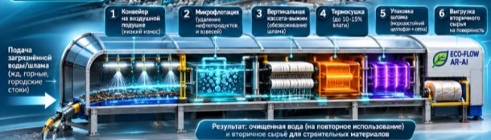
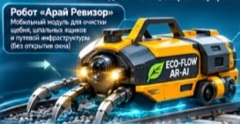
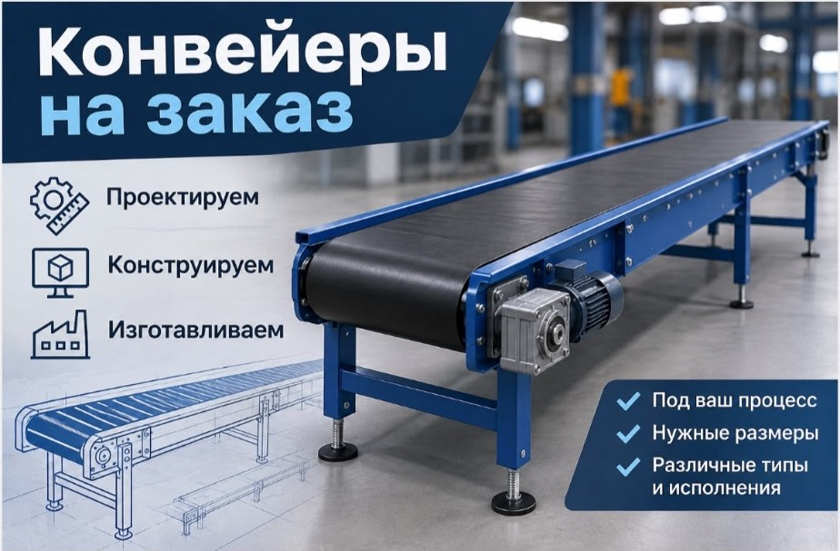
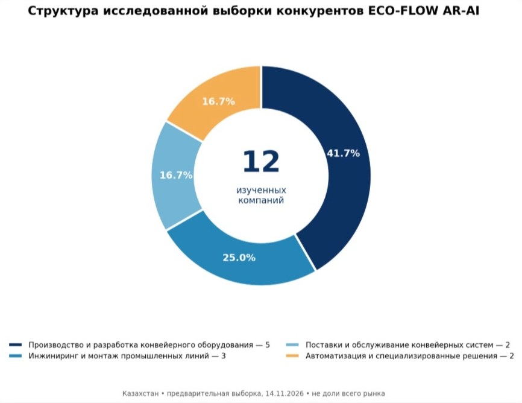

ECO-FLOW AR-AI
Интеллектуальный закрытый конвейерный комплекс для очистки, сбора и переработки загрязнений — с полной цифровой интеграцией. Проектируем и конструируем вместе с НИИ инклюзивного инжиниринга «Арай».

Грязь и шлам — не отходы, а сырьё
На железной дороге, в горнодобыче и в городских сетях постоянно образуются загрязнённая вода и шлам: нефтепродукты, взвеси, мусор, отработанный щебень. Обычно их собирают, вывозят и складируют. ECO-FLOW AR-AI перерабатывает их на месте — в одной закрытой линии.
Как обычно
Несколько разрозненных этапов и подрядчиков.
- Открытые отстойники — запах и выбросы
- Вывоз шлама на полигон — затраты на транспорт и хранение
- Для очистки пути часто нужно перекрывать движение
- Вода и твёрдые отходы теряются
С ECO-FLOW AR-AI
Один герметичный комплекс от сбора до готового сырья.
- Без выбросов и запаха — герметичный корпус
- Автоматическая очистка и переработка без остановки процесса
- Робот собирает загрязнения без «окна» на путях
- На выходе — чистая вода и сырьё для стройматериалов
Шесть модулей одной линии
Загрязнённая вода и шлам (от железной дороги, горных предприятий, городских стоков) подаются на вход комплекса. Дальше их по очереди проводит конвейер — через шесть модулей, каждый из которых делает свою часть работы.

Конвейер на воздушной подушке
Лента движется на тонком слое воздуха, а не по роликам. Меньше трения — меньше износ и энергозатраты, линия работает дольше без ремонта.
Микрофлотация
Мельчайшие пузырьки воздуха прилипают к каплям нефтепродуктов и взвешенным частицам и поднимают их на поверхность, где они снимаются. Вода становится чистой.
Вертикальная кассета-выжим
Осадок (шлам) отжимается в вертикальных кассетах. Вода уходит обратно на очистку, а шлам становится плотным и компактным.
Термосушка
Шлам досушивается до влажности 10–15%. Сухую массу проще хранить, перевозить и использовать как сырьё.
Упаковка шлама
Готовая масса упаковывается в морозостойкий целлофан с сеткой — не размокает, не пылит и выдерживает зиму под открытым небом.
Выгрузка вторичного сырья
Упакованное сырьё выгружается на поверхность — готово к отправке на производство строительных материалов.

Робот «Арай Ревизор»
Мобильный модуль для очистки щебня, шпальных ящиков и путевой инфраструктуры — без открытия «окна», то есть без остановки движения поездов на время работ. Робот — это «руки» комплекса: он собирает загрязнения прямо на пути и подаёт их на конвейер.
- Диагностика — ИИ и датчики находят загрязнённые участки
- Очистка от мусора и нефтестоков — щебень и шпальные ящики
- Сбор и подача на конвейер — дальше всё перерабатывает линия
Линейка решений ECO-FLOW AR-AI
Комплекс модульный: одна и та же технология собирается под разные объекты.
ЖД-путь
Очистка щебня и шпальных ящиков, сбор нефтестоков с путевой инфраструктуры — вместе с роботом «Арай Ревизор».
Горная промышленность
Хвостохранилища, шлам и вода с горных предприятий: обезвоживание, очистка воды и выпуск сырья.
Городские сети
КНС, ливневая и хозяйственно-бытовая очистка: закрытая переработка без запаха прямо на объекте.
Комплексом управляют с компьютера
Каждый модуль оснащён датчиками, а система управления передаёт данные операторам и в учётные системы предприятия.
ИИ-мониторинг
Отслеживает работу линии и состояние загрязнений (TRL-6).
Датчики
Уровень, давление, расход и состав воды.
SCADA / BMS
Удалённый контроль и управление комплексом.
Аналитика
Отчётность по ESG и KPI для руководства.
Интеграция с АСУ
Подключение к системам управления предприятия.
Почему это удобно
- Без выбросов и запаха
- Герметичный корпус
- Автоматическая очистка и переработка
- Без остановки процесса
- Для промышленных и городских объектов
Что получает заказчик
- Комплексная очистка — и вода, и твёрдые отходы в одной линии
- Интеграция в существующую инфраструктуру — не нужно перестраивать объект
- Высокая эффективность и низкие эксплуатационные затраты
- Модульное исполнение и масштабирование — от пилота до большого объекта
- Экологическая и экономическая выгода (ESG)
Не идея, а проверенная разработка
Подтверждён испытаниями: ИМАШ НАН КР, City Road, Астана Су Арнасы, Wabtec.
№486832, №483970, №483969, №507933.
Научные статьи — поданы и опубликованы.
Внедрения и договоры: Астана Су Арнасы, City Road, ТОО WEST STEEL 04, SharifConstruction.
АО «НК «ҚТЖ» — на разработку и внедрение, пилотный проект на железнодорожной инфраструктуре.

Конвейеры на заказ
Кроме ECO-FLOW AR-AI, делаем обычные промышленные конвейеры — ленточные и роликовые — под конкретную задачу.
- Проектируем — изучаем ваш процесс и груз
- Конструируем — разрабатываем конструкцию и чертежи
- Изготавливаем — готовый конвейер для вашего объекта
- Под ваш процесс и нужные размеры
- Различные типы и исполнения
Мы проектируем и конструируем
Ведём проект от первого расчёта до работы на объекте и дальше.
Проектирование
ТЭО, рабочая документация (РД), сметы.
Конструирование и изготовление
Разработка конструкции и выпуск оборудования.
Монтаж и интеграция
Установка на объекте и подключение к инфраструктуре.
Пусконаладка
Запуск, настройка и проверка всех модулей.
Сервис и сопровождение
Эксплуатационное сопровождение и обслуживание.
Модернизация
Обновление и масштабирование действующих линий.
Кто работает с конвейерами в Казахстане
Мы изучили 12 компаний. Большинство занимается чем-то одним: производством, монтажом, сервисом или автоматизацией. ECO-FLOW AR-AI объединяет все эти направления в одном проекте — и добавляет очистку и переработку загрязнений.
Предварительная выборка, 14.11.2026. Это структура изученных компаний, а не доли всего рынка.

ECO-FLOW AR-AI
Инженерное решение для чистой инфраструктуры, переработки отходов и устойчивого развития. Расскажите о своём объекте — подберём решение.
Обсудить проект